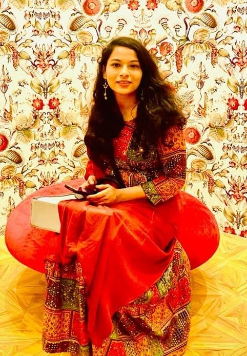

Guest Faculty (Communication Skills)
Department of English | Jamia Millia Islamia, New Delhi
(August 2024 – Present)
Key Responsibilities:
Teaching
Communication Skills to undergraduate studentsCourse Planning
Instructional design and structureMentoring
Student mentoring and classroom facilitationAssessment
Assignment preparation & internal evaluationPedagogy
Promoting communication and critical thinking skills through interactive pedagogyResearch Profile
I am an interdisciplinary humanities researcher specializing in graphic narratives, multimodal discourse analysis, visual rhetoric, and postcolonial visual culture. My research examines how visual storytelling constructs identity, memory, trauma, marginalization, and epistemic justice across literary and digital environments.
My recent work extends into AI-assisted reading practices, digital humanities, multimodal literacy, and innovative approaches to higher education pedagogy. I am particularly interested in the evolving relationship between literature, visual communication, technology, and knowledge production.
Research Interests
Graphic Novel Studies
Visual Rhetoric
Multimodal Discourse
Digital Humanities
AI & Literature
Reader Response Theory
Trauma & Memory
Postcolonial Studies
Visual Culture
Higher Ed Pedagogy
Communication
Stylistics